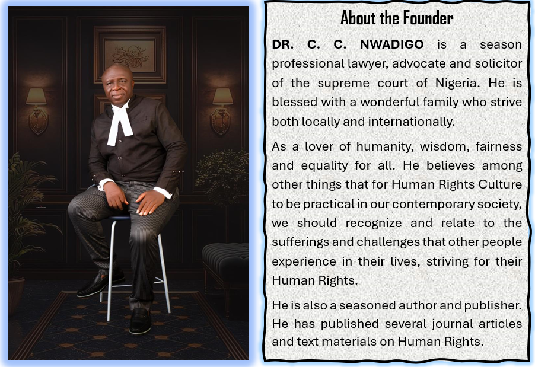
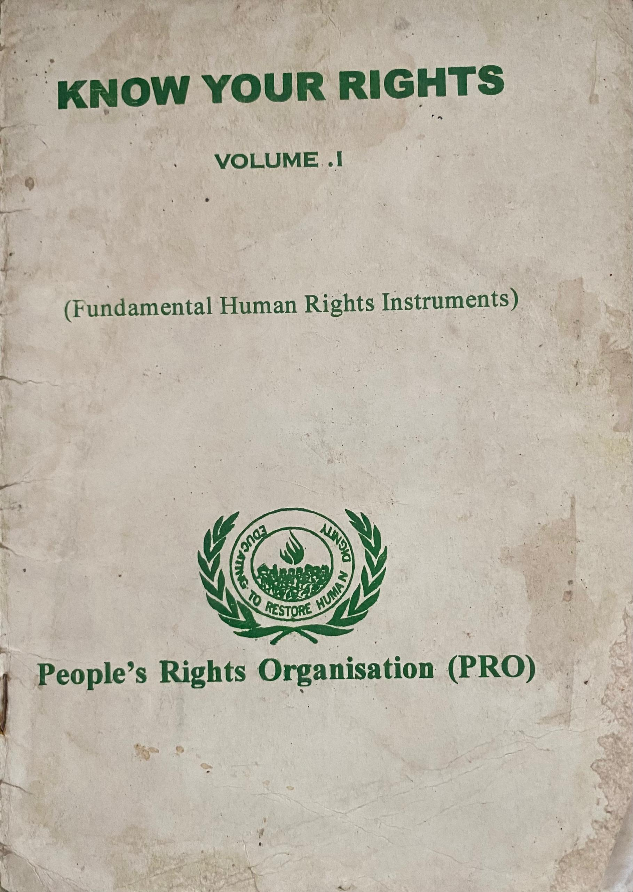
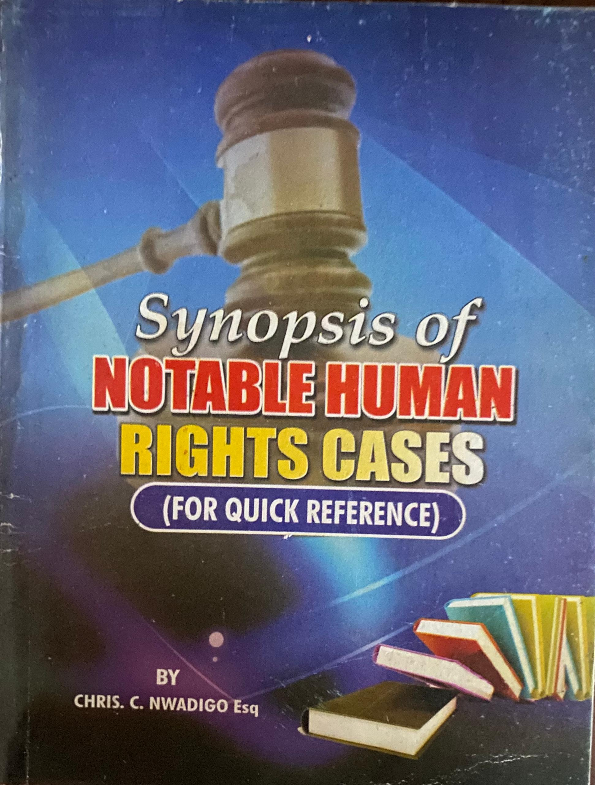
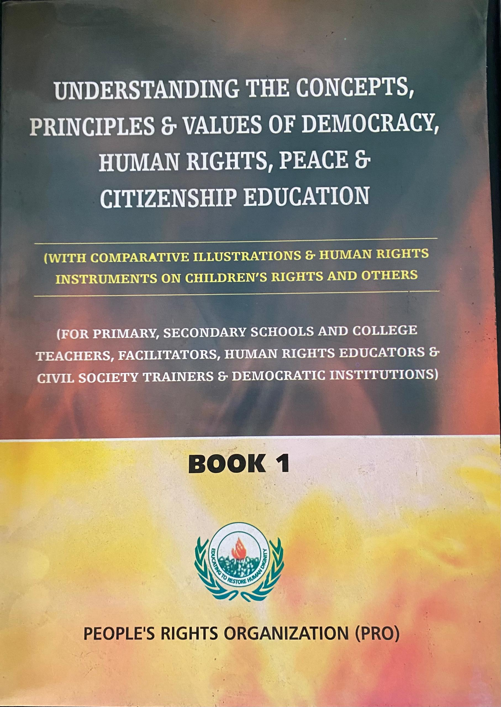
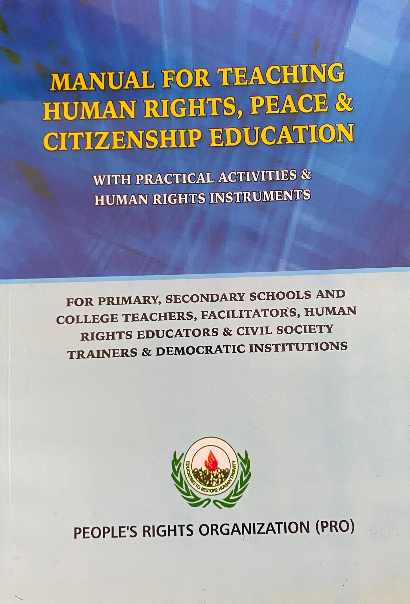
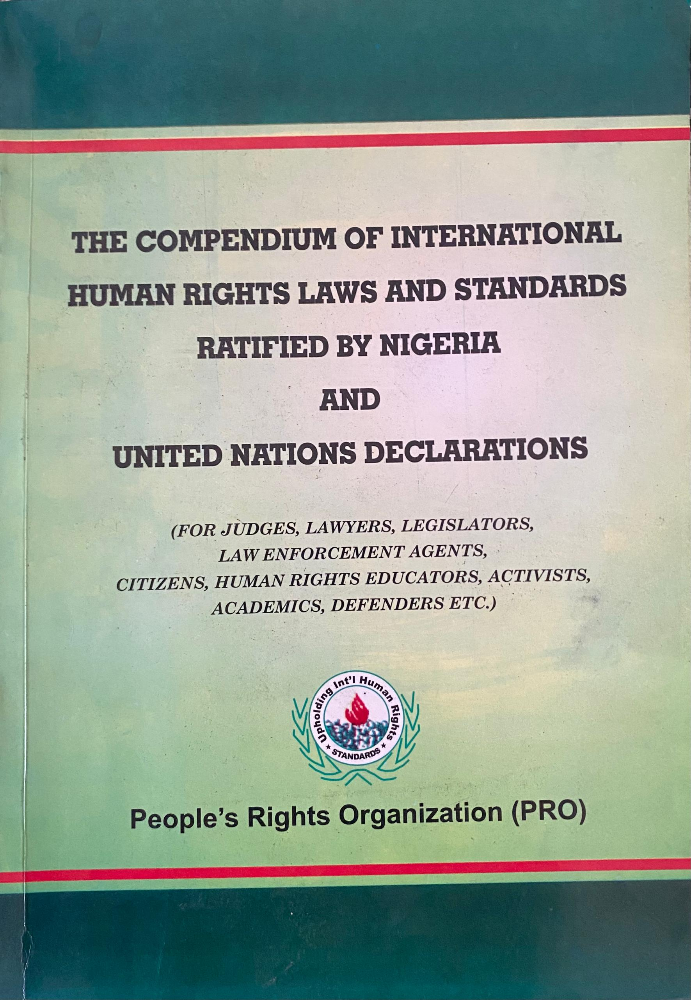
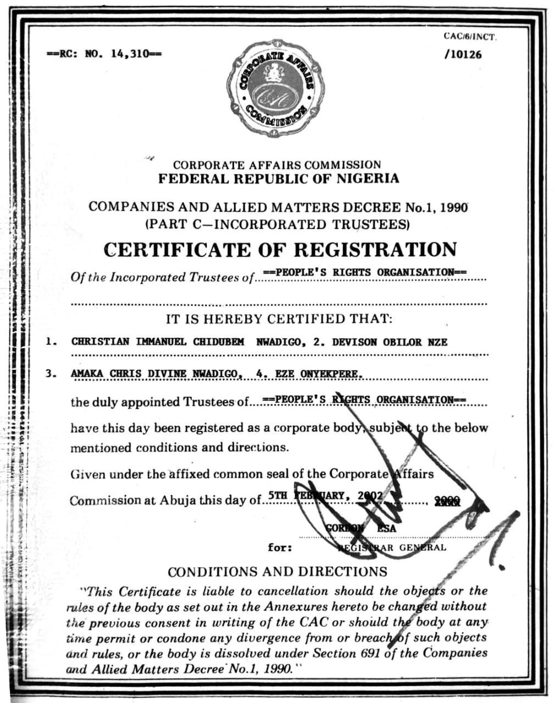
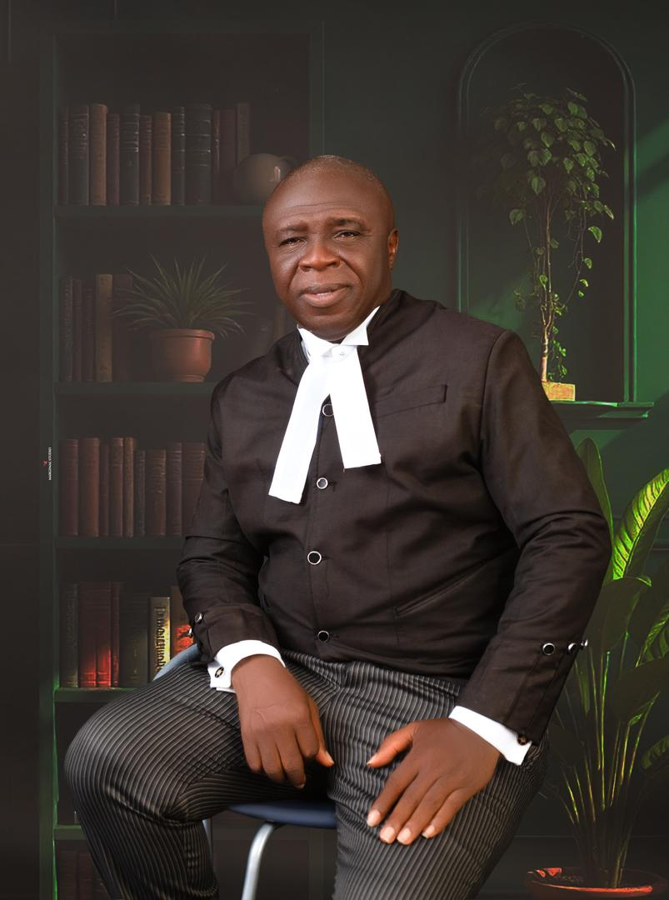
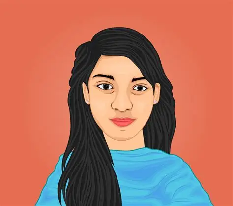
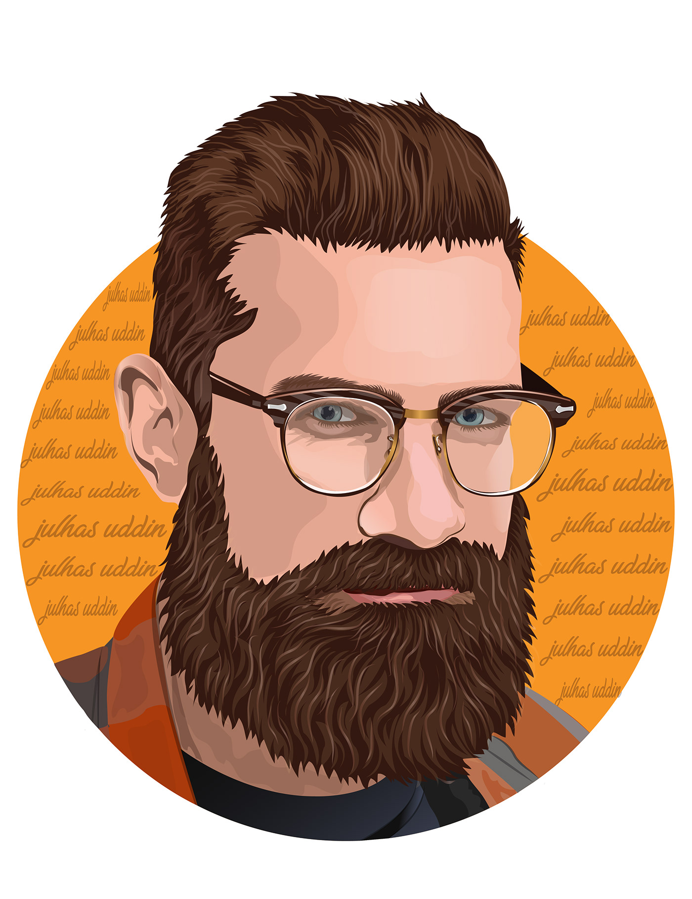

People's Rights Organization (PRO) is a non-governmental organization committed to the promotion and protection of human rights, social justice, and the rule of law in Nigeria. Our mission is to empower individuals and communities to understand and exercise their rights, advocate for policy changes, and hold authorities accountable for human rights violations. Furthermore, People's Rights Organization, PRO is a non-partisan, non-profit, voluntary, membership and non-governmental Human Rights Organization registered with Corporate Affairs Commission, CAC, and established to educate and empower African people with knowledge of all their Human Rights and Fundamental Freedoms to enable them defend same, maximize their potentials and secure quality life of Human Dignity.
Latest News
Coalition of human rights lawyers launches rapid response team to defend Nigerians facing rights abuses
The Nigerian arm of the Defenders Legal Rapid Response Team, ac oalition of lawyers committed to environmental protection, human rights and public-interest litigation has been inaugurated in Benin, Edo State Capital, with a pledge to provide swift legal support to citizens facing reprisals for speaking out against abuses. The initiative, promoted by the Environmental Defenders Network, EDEN, in collaboration with Chima Williams and Associates Law Firm, with support from Clidef, brings together lawyers drawn from different areas of legal practice and currently has about 35 members across four of Nigeria’s six geopolitical zones.
Speaking at the inauguration in Benin City, the Executive Director of
Environmental Defenders Network, EDEN, Comrade Chima Williams, said the platform was established to restore public confidence in the ability and willingness of lawyers to stand firmly with citizens whose rights are threatened because of their environmental, community, land and fundamental rights advocacy.
Comrade Williams explained that the team is not an “all-comers platform,” but a carefully constituted network of lawyers who share a commitment to using their professional expertise, time, intellectual capacity and networks to defend citizens facing intimidation or reprisals from government authorities, corporations or powerful individuals.

Dr.Christian Nwadigo (Ph.d Laws) Founder People's Rights Organization
VISION
To build Peace, Democratic and Human Rights Culture in Africa.
Books by Dr. C. C. Nwadigo

KNOW YOUR RIGHTS (Volume 1) (FUNDAMENTAL HUMAN RIGHTS INSTRUMENTS)

Synopsis of NOTABLE HUMAN RIGHTS CASES (FOR QUICK REFERENCE)

UNDERSTANDING THE CONCEPTS, PRINCIPLES AND VALUES OF DEMOCRACY, HUMAN RIGHTS, PEACE & CITIZENSHIP EDUCATION

MANUAL FOR TEACHING HUMAN RIGHTS, PEACE AND CITIZENSHIP EDUCATION

THE COMPENDUM OF INTERNATIONAL HUMAN RIGHTS LAW AND STANDARDS RATIFIED BY NIGERIA AND UNITED NATIONS DECLARATIONS

CORPORATE AFFAIRS COMMISSION CERTIFICATE OF REGISTRATION
LEAD MEMBERS OF THE ORGANIZATION

DR. CHRISTIAN CHIDUBEM NWADIGO (EXECUTIVE DIRECTOR)
Bar. Favour Olegaeme (Programme Officer)

Mrs. Amaka Chris Nwadigo (Women and Children Affairs)

Mr. Bright Nnaemeka Agu (Information Officer)
Miss Echebiri Christiana Onyedikachi (Account Officer)
Bar. (Mrs.) Chino Achufuna (Executive Director, International)
Membership
You can become our partner in our vision to build a Human Rights Culture in Africa and empowering people to defend their Rights and that of others by forwarding your monetary Donation or material support to the Organization provided that the person giving the money or donating the property is adjudged to be a person of integrity. This type of senior membership confers life membership upon a partner and free copies of our publications including free legal services in cases of violation of their Rights.
(A) MEMBERSHIP:
Membership of PRO is open to All People who share the vision, mission and objectives of the organization and we further seek the support and co-operation of like-minded individuals or groups in accomplishment of our vision.
We shall welcome people from all over the world who share our vision and desires to be VOLUNTEERS.
BOARD OF GOVERNORS:
Eze Onyekpere Esq., Dr. C. C. Nwadigo, Mrs Amakachris. Chidubem, Andy Ezeani, Bar. Louis Onyenamezu, Miss Agbasi Onyedika Blessing, Bar. Chino. Ihediwa, Bar. Ukpai O. Ukairo and Bar. Okey Nwelue